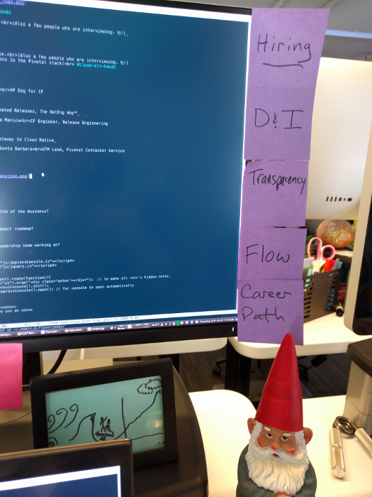
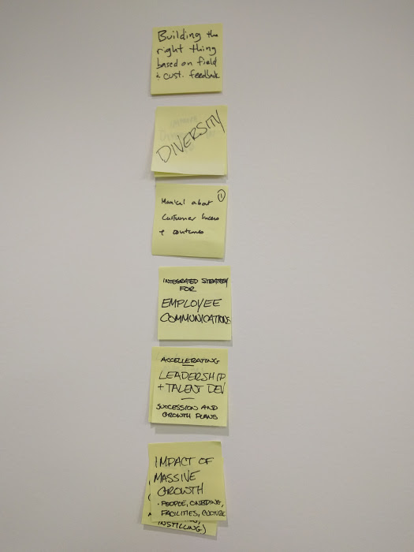
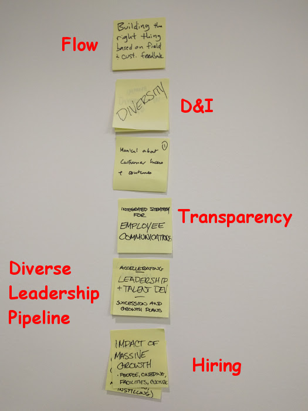

Cloud R&D
All-Hands
Pivots only, please!
(Also a few people who are interviewing. 👋!)
OHAI.
- Pivots only, please.
(Also a few people who are interviewing. 👋!)
- Please ask questions in the Pivotal slack!
#cloud-all-hands
Transparency
Mike Dalessio, NYC
VP Eng for CF
Engineering Automated Releases, The RelEng Way™
Dave Walter, Santa Monica
CF Engineer, Release Engineering
Kubo and PKS: Gateway to Cloud Native
Cornelia Davis, Santa Barbara
GTM Lead, Pivotal Container Service
onsi took a break, reflected, came back with renewed focus.
interesting: recursive reflection on how to add value.

i started a kanban board of 4-5 things i'm trying to focus on right now
this is an interesting one
Transparency
transparency, or a lack thereof, manifests itself with questions. like ...
Why are we investing in Kubo and PKS?
What's the health of the business?
What's the product roadmap?
What's the leadership team doing?
it comes down to, are we as a company and an R&D organization, sharing information appropriately
Information sharing
push v pull models
push tends to be more effective, and so we rely on it
Information sharing
weekly leadership drumbeat email
Information sharing
monthly all-hands
but it's more than just communicating activity, it's about ...
Communicating priority and intent
which brings me back to this, my personal kanban board
- Hiring
- Diversity and Inclusion
- Transparency
- "Flow"
- Career Path
- Hiring
- Diversity and Inclusion
more completely,
- Hiring and retaining a diverse set of employees
- Increasing diversity overall
- Increasing diversity of leadership
- Creating and maintaining an inclusive culture
these are all coupled together and incredibly important to our company and us as empathetic humans
they deserve a complete talk by themselves, which i'm planning to do next month

important to every part of the company.
leadership offsite with sales field, labs, data, cf all agree

these are the same themes in a different form
Flow
Begins at: Why is this important?
Ends with: Shipping valuable software.
there's a director offsite in toronto next week where we're going to be digging into how to do this better
Career Path
which is code for ...
Technical Career Path
which feeds back into ...
Technical Career Path
- retaining a diverse team
- building a diverse technical leadership cohort
- engineering better
there have been a lot of false starts with the technical career path
Labs era: Technical Expert role
our own david stevenson was once the performance technical expert
hard to own a role like this in the labs work cycle where you're allocated to a client
Recently: Specialist role
for cross-cutting expertise like networking and security
it's not clear how to set those people up for success, but we're continuing to iterate on it and discuss it
Experiment: Engineering Lead role
someone who takes a more direct guiding role with a subset of related teams
Experiment: Engineering Lead role
→ London
EL for redis, services enablement, and osbapi
EL for Garden and Groot
takes on ownership of architecture design quality, code quality, project flow
ensures tight feedback loops
teams gave positive feedback and found it easier to get support and perspective
Experiment: Engineering Lead role
→ NYC
→ Toronto
Similar role in NYC for Windows containers and bosh
slightly different role in Toronto, day to day activities are different, but goal is to have closer technical leadership to the team
Experiment: Engineering Lead role
Highly contextual, activities vary from team to team.
Formalizing the Engineering Lead role
Open questions ...
Formalizing the Engineering Lead role
Does this encroach on the anchor role?
we're looking for people with strong communication and consensus-building skills to provide guidance without being overbearing.
Formalizing the Engineering Lead role
Is this a change in title or comp?
anchor role → not immediately
Formalizing the Engineering Lead role
When is this coming to other offices?
Formalizing the Engineering Lead role
What's the next step for the role?
Formalizing the Engineering Lead role
- Open call for an Engineering Lead in London
- Continue to iterate
- Continue the discussion of formalizing the role in other offices
Call to Action: I want to talk to people about these things.
- Hiring
- Diversity and Inclusion
- Transparency
- "Flow"
- Career Path
I will be reaching out to some individual, and local D&I grassroots groups. If you want to chat, I will make time.
Next time:
- More on hiring a diverse set of employees
- More on building a diverse leadership pipeline
- More on "flow"
- More on technical career paths